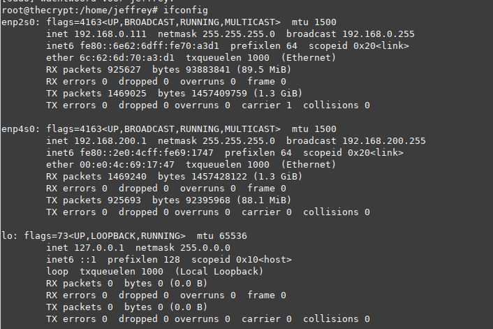

In this tutorial we are going to configure Linux server to act as a static router for Debian based systems.
- Make sure you have sudo privileges.
- In order to construct your network architecture you will need to have a global view off your network.
- Configure the static routing table on your Linux router
- Enable IP forwarding(nic1 to nic2).
- Setup dhcp as a service in this case isc.dhcp.server
- Understanding your network architecture:
In this case we are going to configure a router between two networks thus being,
Install net-tools : apt install net-tools
give the command : ifconfig

for the first NIC enp2s0 == 192.168.0.111
for the second NIC enp4s0 == 192.168.200.1
Configuring the NIC’s
sudo nano /etc/network/interfaces
# Defining the first interface
auto {interface_name}
iface {interface_name} inet dhcp
# Defining the second interface
auto {interface_name}
iface {interface_name} inet static
address 192.168.200.1
netmask 255.255.255.0
Note : do not forget to add the "auto" directive, otherwise your interfaces won’t be raised at boot time.Save your file and restart your networking service: systemctl restart networking.service;sudo systemctl status
networking.service
- Creating Static Routes using ip:
run the “ip route” command
sudo ip route
Deleting existing static routes
If static routers are already defined for your network interfaces, you will need to delete them : otherwise, you
won’t be able to add new ones. To delete a route, use the "ip route" command with the “delete” option and specify the
route to be deleted. $ ip route delete {route} In our case, we want to delete routes that are pointing to the
192.168.0.0/24 and 192.168.200.0/24 networks.
ip route delete 192.168.200.0/24
ip route delete 192.168.0.0/24
Creating new static routes
First, you can create a route from the first network adapter IP address to the second network IP address.
$ ip route add 192.168.200.0/24 via 192.168.0.111
Enabling IP forwarding on Linux
I. In order to enable IP forwarding, head over to the /etc/sysctl.conf file and look for the “net.ipv4.ip_forward” parameter.
$ vi /etc/sysctl.conf
By default, this parameter is set to “0”, but you want to set it to “1” in order to enable IP forwarding.
II. Setup dhcp as a service in this case isc.dhcp.server
Installing the DHCP server: apt install isc-dhcp-server
III. Configure the DHCP server
nano /etc/dhcp/dhcpd.conf
ddns-update-style none;
## Set a domain name for your LAN ##
option domain-name "cascadiacommons.org";
## Set DNS server IP address, you can set to your ISP's dns server too or use Google DNS server##
option domain-name-servers 8..8.8.8, 8.8.4.4;
Increase the lease time. The time is set in seconds:
default-lease-time 86400;
max-lease-time 604800;
The authoritative directive should be uncommented:
authoritative;
IV. set Subnet:
subnet 192.168.200.0 netmask 255.255.255.0 {
## dhcp start and end IP range ##
range 192.168.200.100 192.168.200.215;
option subnet-mask 255.255.255.0; ## subnet
option broadcast-address 192.168.200.255; ## broadcast
option routers 192.168.200.1; ## router IP
}
dont forget to reboot the system :
sudo shutdown -r now
Also needed a patch cable needed for testing the network